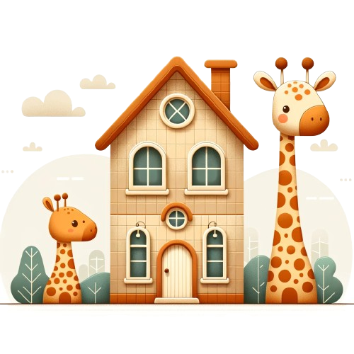
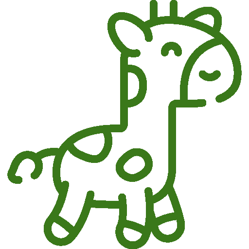
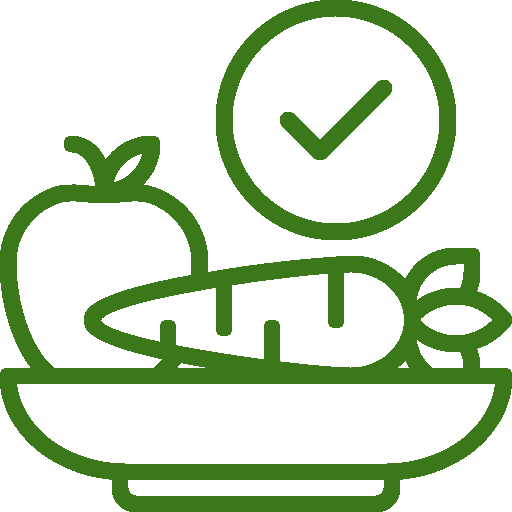
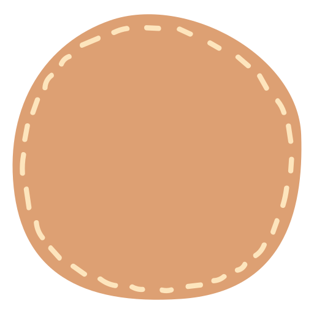

Placówka Przeworska
ul. Przeworska 7/U7, Warszawa
Obecna placówka Misie Empatisie z pełnymi informacjami o zespole, galerii i dojeździe.
Zobacz placówkęWitamy w świecie pełnym empatii, zrozumienia i wdzięczności.

Misie Empatisie to bliskościowe przedszkole i żłobek w Warszawie na Pradze Południe, w którym zmieniamy świat ucząc naszych małych przyjaciół porozumiewania się językiem serca i empatii w naturalny sposób. Skupiamy się na uczuciach i potrzebach, zarówno własnych jak i tych, którzy nas otaczają. Naszym celem jest, aby każdy maluch nabył umiejętność dawania prosto z serca. Dążymy do prawdziwego kontaktu ze sobą i z innymi, opartego na wzajemnym zrozumieniu, szacunku i współpracy.

Nasze rozmowy opierają się na wyrażaniu i zauważaniu potrzeb oraz uczuć. Uczymy się obserwować i dostrzegać fakty, pozbywając się ocen, krytyki i uprzedzeń. Kierujemy się zasadą wzajemnego zrozumienia, szacunku i współpracy. To tutaj zaczynamy wierzyć, że my, a w tym nasze potrzeby i uczucia są niezwykle ważne.
Podstawą budowania naszych relacji z Dziećmi jest bliskość, empatia i partnerstwo. Naszym zadaniem jest wspieranie naszych małych przyjaciół w każdej chwili kiedy tylko tego potrzebują. Dajemy im możliwość wyboru, pozwalamy poczuć, jak oni i ich decyzje są istotne.

Zdrowy sposób odżywania to kluczowy aspekt prawidłowego rozwoju każdego Dziecka. Dbamy o to, aby wszystkie posiłki, które zapewniamy maluchom dostarczały im potrzebnych wartości odżywczych. Zależy nam na wprowadzaniu prawidłowych nawyków i zwyczajów żywieniowych.
W rozwiązywaniu konfliktów między dziećmi nauczyciel jest jedynie mediatorem, nie stającym po żadnej ze stron. Zadaniem wychowawcy jest przekazanie sposobów na osiągnięcie porozumienia, tak aby konflikt nie był kłótnią. Staramy się aby nasz mały świat pozbawiony był ocen, krytyki i wzajemnego obwiniania.
Kształtujemy motywację wewnętrzną, ponieważ wychodzimy z założenia, że tylko dzięki niej jesteśmy w stanie osiągać prawdziwe i trwałe sukcesy. Sukcesem jest dla nas nie tylko efekt końcowy, ale przede wszystkim droga, którą pokonujemy, aby dojść do zaplanowanego celu.
Zależy nam na współpracy z Rodzicami. Uważamy, że dzięki niej mamy szanse na głębsze poznanie dziecka, a także na wsparcie go w większym zakresie. Jesteśmy otwarci na potrzeby Rodziców, pamiętając jednak o swoich wartościach i założeniach.
Każdy dzień rozpoczynamy od rozmowy o tym, co aktualnie czujemy i przeżywamy. Omawiamy to, co nas porusza i co dzieje się w naszych sercach. Dzięki temu zaspokajamy swoją potrzebę dzielenia się zarówno smutkami jak i radościami.
Dzięki kameralnej atmosferze mamy szanse na indywidualne podejście, nawiązanie bliskiej i szczerej relacji z Maluchami, a dzięki temu zapewnienie im poczucia bezpieczeństwa, które jest niezwykle istotne na tym etapie rozwoju.
Przepraszanie widzimy jako pewien proces. Jest to dla nas coś więcej niż tylko „magiczne słowo". Przeproszenie jest pewnego rodzaju uznaniem, wcześniej niezauważonych potrzeb drugiej osoby.

Przedszkole
1700zł
Żłobek
2500zł
(-1500zł)
Wpisowe
800zł
Zajęcia SI pomagają dzieciom lepiej odbierać, przetwarzać i reagować na bodźce zmysłowe. Dzięki ćwiczeniom w formie zabawy dzieci rozwijają koordynację ruchową, równowagę, koncentrację uwagi oraz lepiej radzą sobie z codziennymi wyzwaniami. Terapia prowadzona jest przez certyfikowanego terapeutę SI.
TUS to zajęcia wspierające rozwój kompetencji społecznych u dzieci. Uczymy m.in. współpracy, rozpoznawania emocji, rozwiązywania konfliktów i radzenia sobie w sytuacjach społecznych. Zajęcia odbywają się w małych grupach i prowadzone są w atmosferze akceptacji i zrozumienia.
Zajęcia logopedyczne mają na celu wspieranie prawidłowego rozwoju mowy i komunikacji. Podczas indywidualnych spotkań dzieci ćwiczą poprawną wymowę, rozwijają słownictwo oraz usprawniają aparat artykulacyjny poprzez zabawy językowe, oddechowe i słuchowe.
Zajęcia z psychologiem wspierają głównie rozwój emocjonalny i społeczny dzieci. Pomagają w lepszym rozumieniu własnych emocji, budowaniu poczucia własnej wartości, radzeniu sobie ze stresem oraz trudnymi sytuacjami. Spotkania te dostosowane są do potrzeb dziecka i prowadzone są w bezpiecznej, wspierającej atmosferze.
Każda z naszych placówek ma osobną podstronę z informacjami o kadrze, galerią oraz mapą dojazdu.
ul. Przeworska 7/U7, Warszawa
Obecna placówka Misie Empatisie z pełnymi informacjami o zespole, galerii i dojeździe.
Zobacz placówkęul. Drwęcka 18/U4, Warszawa
Nowa placówka przygotowana w tym samym bliskościowym podejściu, z informacjami o kadrze, galerii i mapie.
Zobacz placówkę